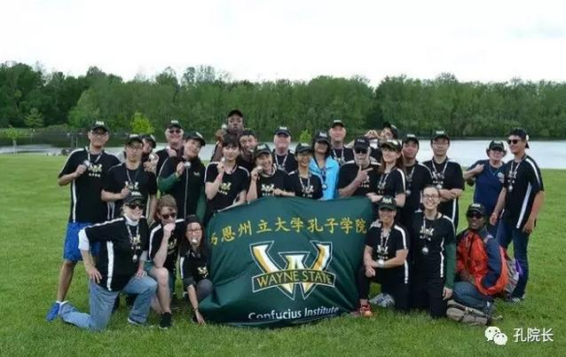

每日一篇——风采/ 美国伟恩州立大学孔子学院喜迎龙舟赛 巧夺第一名
 727
727
来源：原创 作者：杨德玲
端午时节，细雨绵绵。龙舟竞渡，鼓声阵阵。
赛前云淡风轻
密西根首府一年一度的龙舟赛通常在每年9月举行，今年为了更好地让美国的汉语爱好者们感受和体验中国文化，选择了与端午相近的日期举行。经过前期大量的准备，当地时间2017年5月20日上午八点，美国伟恩州立大学孔子学院全体队员在一楼集合，大家精神饱满，蓄势待发，驱车前往。
白色的中型客车里响彻着队员们清脆悦耳的笑声，我们一路高歌、一路前行，在底特律的高速公路上疾驰一个多小时，10点汽车最终抵达霍克岛公园（Hawk Island Park）。距离练习赛还有1个小时时间，大家其乐无穷地玩起了美式棒球，这个棒球热身赛可让全体小伙伴们玩得不亦乐乎，仿若全身每个细胞都动了起来。11点大家纷纷抵达演练场地，22名队员各就各位，手拿船桨和鼓槌，觉得即兴奋，又紧张，即便是很多国内来的小伙伴也是第一次体验划龙舟。
因为都是新手，大家在没有任何沟通和商议的前提下就迷迷糊糊地上了船，在听了船尾指挥人员的指挥后才对划龙舟有了初步的了解。但毕竟还是经验不足，在练习赛的号角拉响后，虽是使出了浑身解数，终究还是不断地打到对方的船桨，船队的节奏非常混乱，练习赛败北。但这却给我们留下了宝贵的经验。回去的路上，我们虽败犹荣，大家春风满面，笑意盈盈地聊着那些在美国的趣事和第一次划龙舟的感悟，期待着明天更好的表现。
赛前蓄势待发
赛中波澜起伏
当地时间2017年5月21日清晨6点，伴着朦胧睡意，美国伟恩州立大学孔子学院全体队员在一楼集合，带着一丝丝倦意的我们驱着车一同前往霍克岛公园（Hawk Island Park）参加2017年密西根首府龙舟赛。来自密西根地区的11个社团、金融机构、大中小学、律师事务所以及政府机构等参加了此次比赛，诸多华人、华侨、外国友人也积极踊跃地参与进来。端午时节，雨纷纷，比赛当天，天公虽不作美，但沸腾的人流和高亢的的热情为2017年龙舟赛着上浓墨重彩的一笔，这必将是一份难忘的记忆。
本次比赛的参赛队伍共计11支，参赛组别分为甲、乙、丙、丁四组。每支参赛队伍由12名男生、8名女生、1名鼓手和1名旗手组成。参赛队伍着统一服装，口号整齐划一。伟恩州立大学孔子学院参赛队员共计22名，其中13名中国选手，9名美国选手。伟恩美方院长约翰·布朗代先生（John Brender）和中方院长范杏丽女士更是全程参与划龙舟。队员们身着黑色体恤衫、头戴全黑鸭舌帽，手套红色手环，寓意龙舟竞渡、吉祥如意。
开幕式当天，来自伟恩州立大学的中国文化资深爱好者大卫·吉姆（David Gimby）在空旷的草地上领着大家集体打太极，“手挥琵琶”、“白鹤亮翅”、“野马分鬃”等等，一招一式大家都忘情投入，享受由太极所带来的那份轻松柔和与宁静致远。小憩片刻便是托马斯·戴维斯（Thomas Davis）领着大家一同跳着美轮美奂、身姿绰约的彩带舞。伴随着悠扬的音乐，大家挥舞着条条彩带，回旋、跳跃、蹁跹如九天的仙子仙女，婉转如飞翔的龙凤，一个个精美绝伦的动作让人惊叹不已。在大家的集体热情高呼之下，我们开心地挥舞着手中的太极扇，一起扭动着身躯，感受着中国舞蹈、武术的博大精深。开幕式现场蔚为壮观，人流不息，欢呼雀跃。
赛中出手得卢
开幕式后，各参赛队伍准备就绪，本着“友谊第一、比赛第二”的信念，我们在一篇欢声笑语中拉响了本次比赛的号角。预赛之后美国伟恩州立大学孔子学院被分在丙组同场竞技。上午场细雨绵绵，加上伟恩参赛队经验不足，接连失利，但是大家越挫越勇，一路披荆斩棘，高喊口号，永不言弃。
午间稍作休息，大家在草地上围坐一团，集思广益，商量策略。同时，更进一步加强组员之间的协调和团队合作精神，以及划船划桨的技巧和策略。作为团队唯一一位参加过多次龙舟赛的华人学生会主席李佩峰同学，一直倾心的为大家出谋划策，和我们大家一起商定了高亢有力的龙舟赛口号“one、two、one、two……”。我们一同商定高喊口号one的时候，大家一同垂直入浆，身体随着船桨后倾，然后迅速将船桨抽离水面。喊two的时候再迅速入浆，如此循环往复。
下午场开场，看着全美装备的安娜堡（Ann Arbor）队各个体格健硕、威武雄壮，我们脑海中闪过一丝丝怯意，但是带着高亢的斗志和饱满的精神的我们相互鼓励、加油打气，伟恩虽前半程稍加落后，后半程奋勇追先，以遥遥领先之姿夺得了头魁。
最后一场竞技，我们旗鼓相当，虽以不到1秒的成绩惜败，但是两场比赛的总成绩最终是伟恩队领先。当裁判宣布成绩时，大家屏住呼吸，稍显一丝紧张和期待。“美国伟恩州立大学孔子学院丙组第一”声音一落，大家相互拥抱，喜极而泣。拿到奖牌时，大家更是兴奋不已。
赛后风和日丽
比赛当天虽是阴雨连绵，但大家的心情却是晴空万里。这是建院以来首次获得龙舟赛一等奖。在一片欢声笑语中，本次比赛取得圆满成功。赛后回到伟恩，我们紧紧相拥，享受着这份由胜利而带来的宝贵喜悦之情。

赛后喜笑颜开
作者简介：
杨德玲，华中科技大学人文学院语言及应用语言学研究生，美国伟恩州立大学孔子学院汉语教师志愿者。